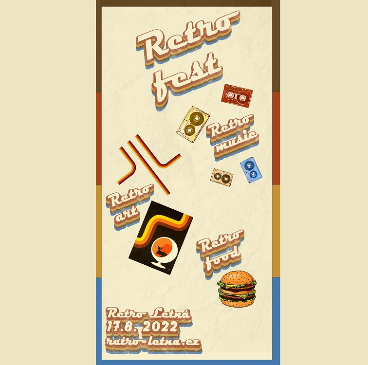
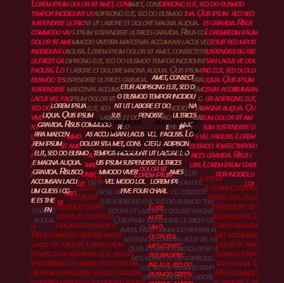
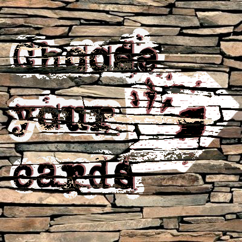

Retro
fest
Plakát na akci
stylování vrstev, písma

Typografie
CG5
Typografie
barevný text tvoří obraz

Citát
Oblíbený citát napůl s
autoportrétem

Choose
your
cards
Graffity vytvořené
za pomoci kontrastu na
pozadí